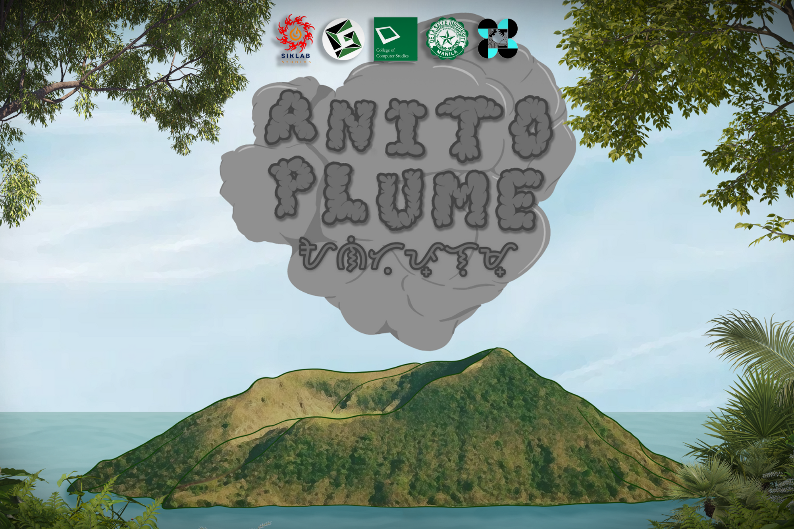
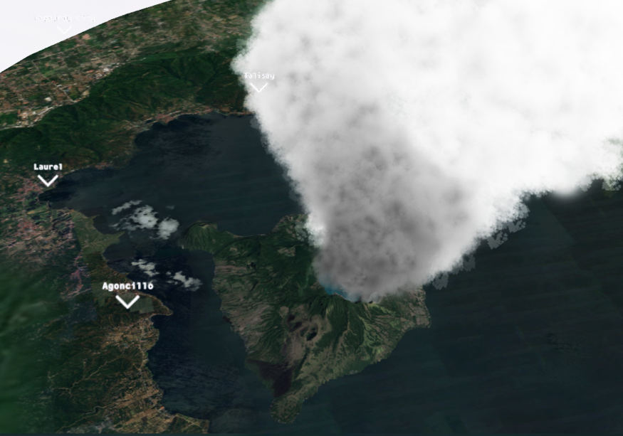
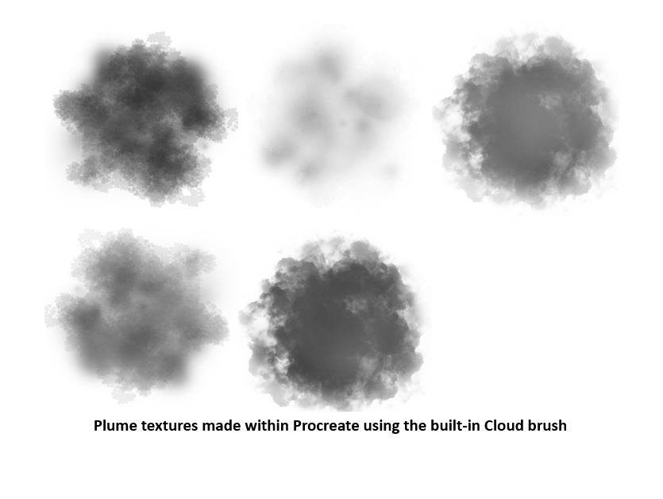
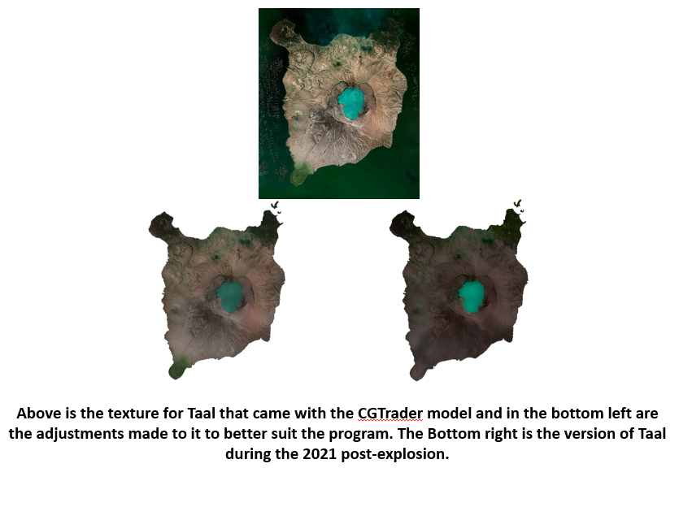
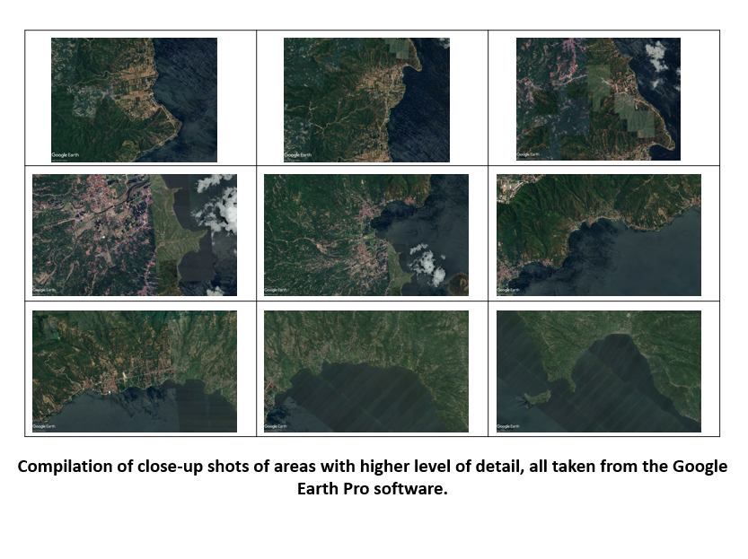
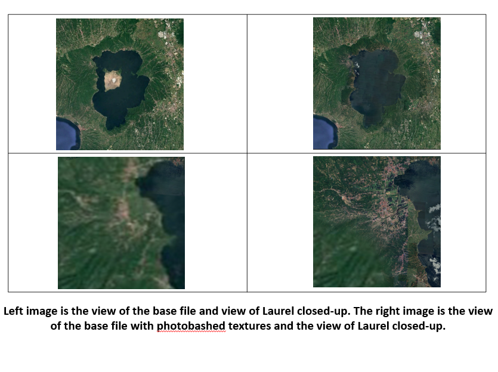
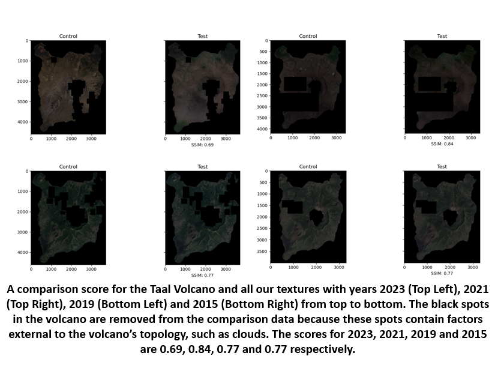
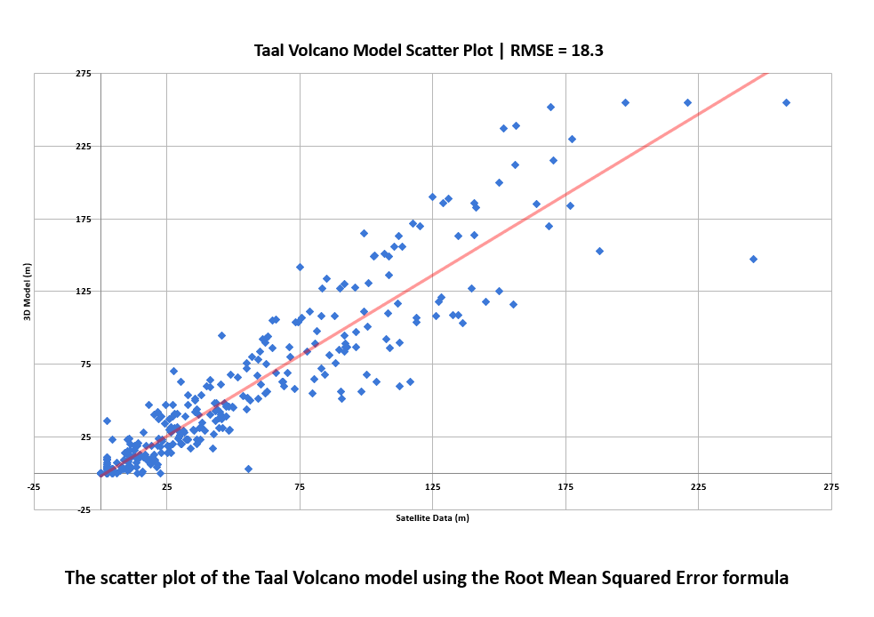
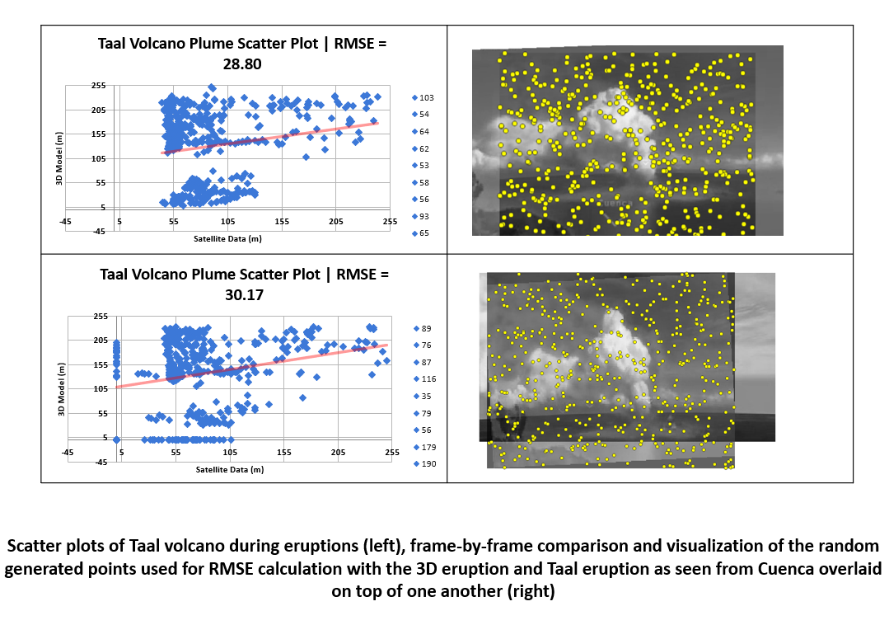
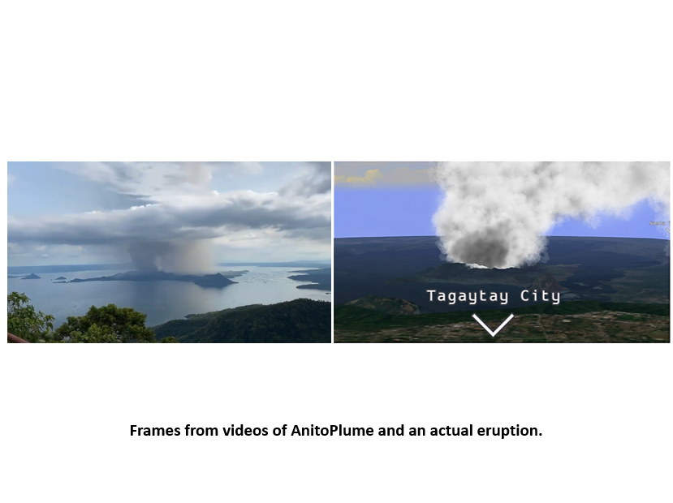

AnitoPlume is a real-time Taal Volcano simulator. It is part of Project Anito, a DOST-PCIEERD funded project worked on within DLSU GAME Lab.

The project is being developed by undergraduate students in De La Salle University as part of their capstone. The members of Siklab Studios are as follows:
Under the advisory of Neil Patrick Del Gallego, Ph.D.
The AnitoPlume simulator comes with customized terrain viewers for years 2016, 2019, 2021 and 2023. The GUI also includes graph visualizations of the wind intensity and angle, which is further supplemented by a plume direction tracker to display which provinces are predicted to be affected by the plumes.







